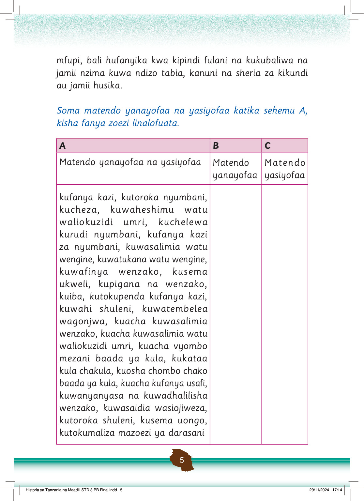

mfupi, bali hufanyika kwa kipindi fulani na kukubaliwa na jamii nzima kuwa ndizo tabia, kanuni na sheria za kikundi au jamii husika.
Soma matendo yanayofaa na yasiyofaa katika sehemu A, kisha fanya zoezi linalofuata.
A
B
C
Matendo yanayofaa na yasiyofaa
Matendo yanayofaa
Matendo yasiyofaa
kufanya kazi, kutoroka nyumbani, kucheza, kuwaheshimu watu waliokuzidi umri, kuchelewa kurudi nyumbani, kufanya kazi za nyumbani, kuwasalimia watu wengine, kuwatukana watu wengine, kuwafinya wenzako, kusema ukweli, kupigana na wenzako, kuiba, kutokupenda kufanya kazi, kuwahi shuleni, kuwatembelea wagonjwa, kuacha kuwasalimia wenzako, kuacha kuwasalimia watu waliokuzidi umri, kuacha vyombo mezani baada ya kula, kukataa kula chakula, kuosha chombo chako baada ya kula, kuacha kufanya usafi, kuwanyanyasa na kuwadhalilisha wenzako, kutoroka shuleni, kusema uongo, kutokumaliza mazoezi ya darasani